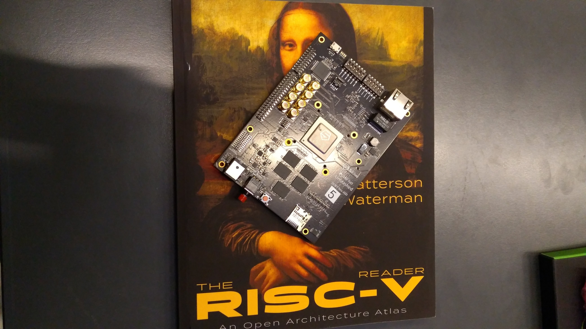
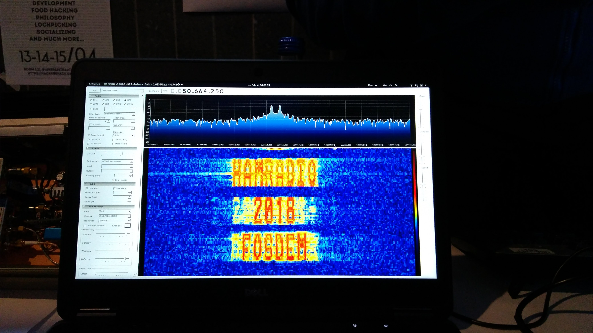
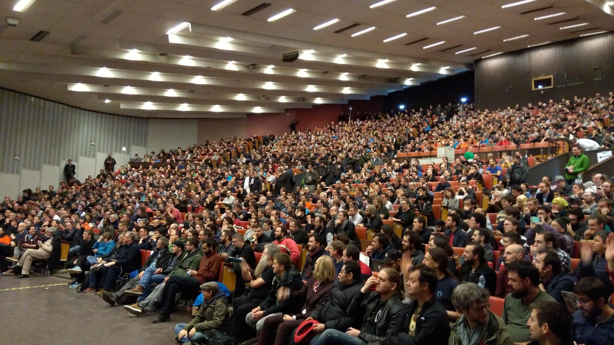

Going to fosdem is always somewhat of a reality check. You see how much you stay in your silo at work, how few women there are in our sector and how small the campus has gotten over the last few years. Meeting old colleagues and learning new things always bring me back. There is never enough time to visit all the talks you want to go to. fosdem is a week worth of seminars condensed into 1 weekend.
While the actual application of the first talk remains to be seen, they did apply an interesting way of working. the concepts of 1 domain, the server world, were applied to another, the embedded domain. Some tweaking was required as you do not have the same amount of resources on an embedded device. risc-v, the second talk in the list, is an open source hardware project. The hardware they showed the presentation on was a system with their chip on it. Very impressive.

During this day I was responsible for the video stream in the iot devroom. Sadly the second to last speaker was unable to make it, causing the last talk to be nearly empty. on the demo tables there were people from hamradio showcasing an interesting sdr waterfall:
after cleaning the devroom there was still time to attend one last talk . this room was packed. meltdown and spectre are big news after all.
